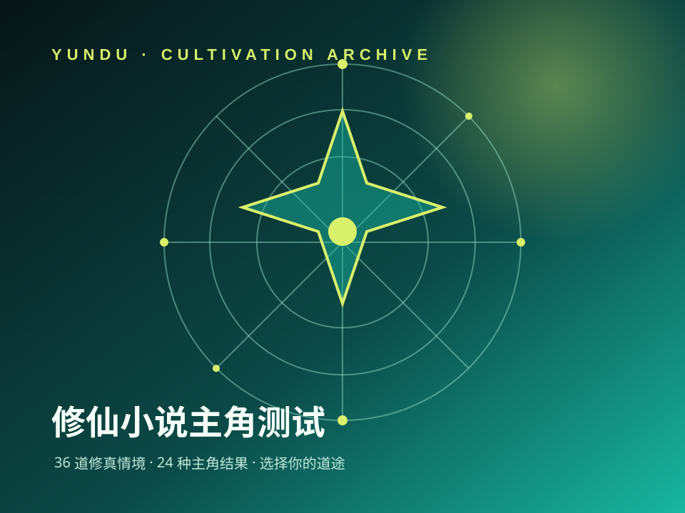
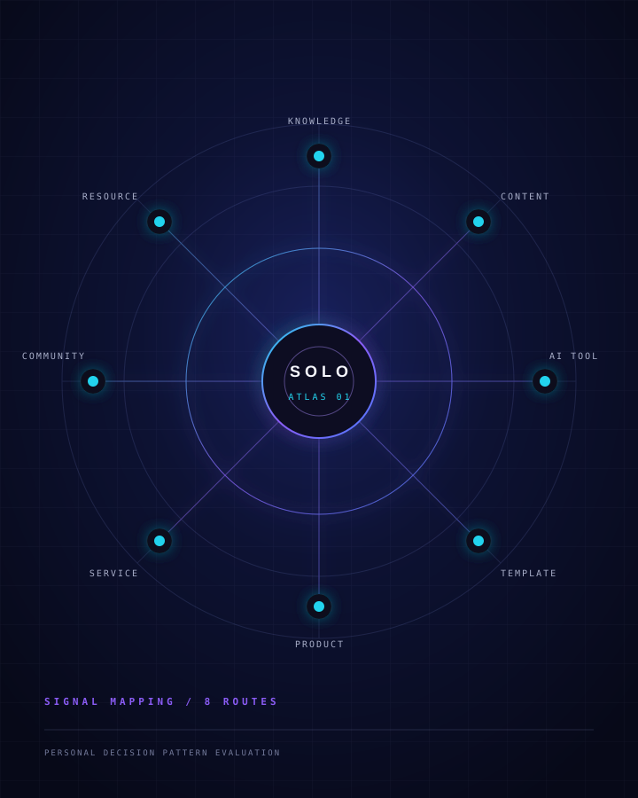
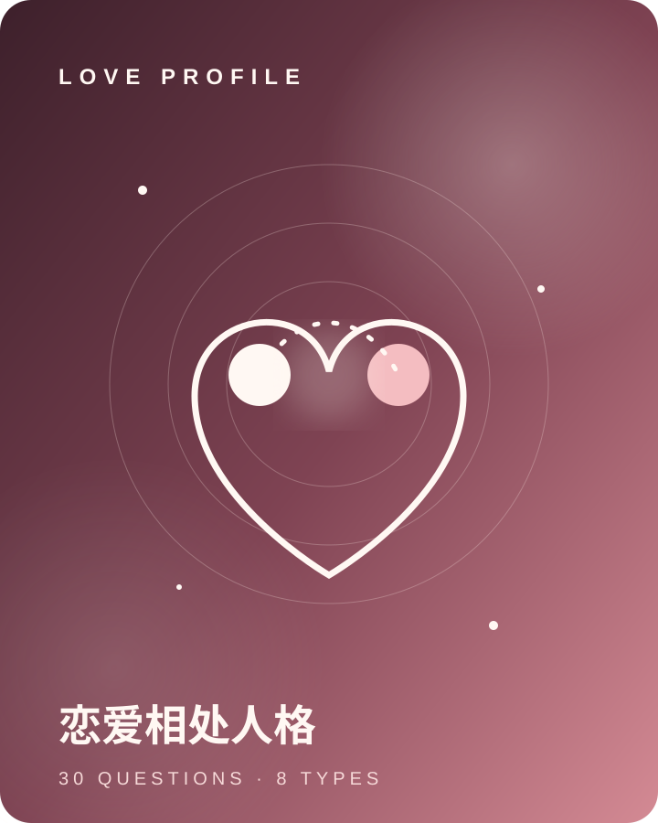
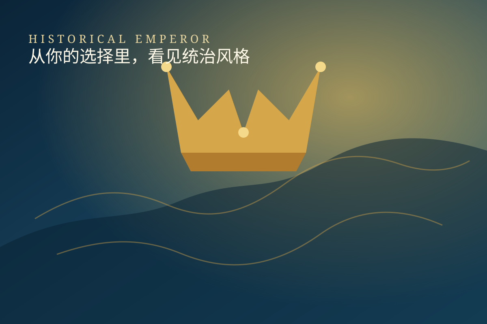
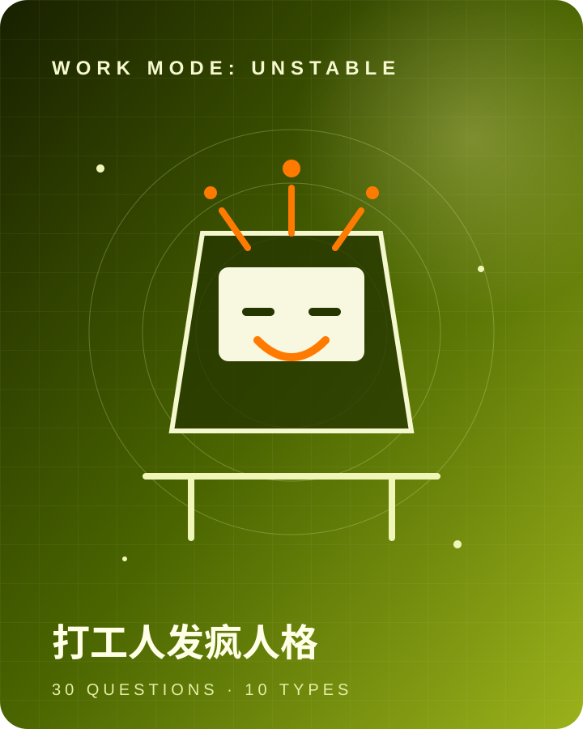
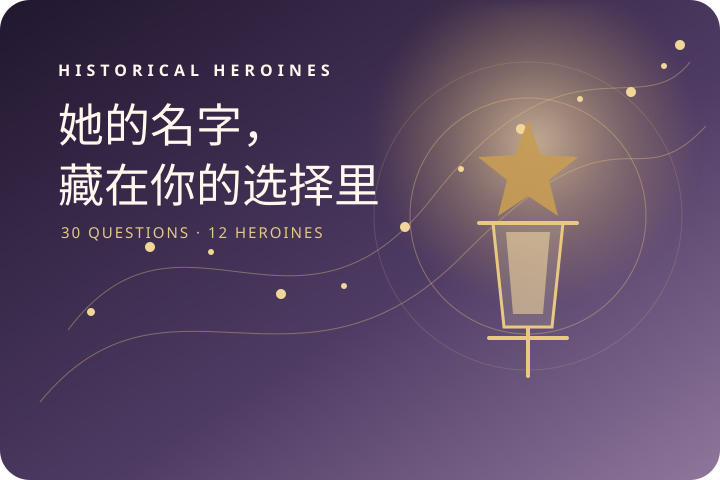
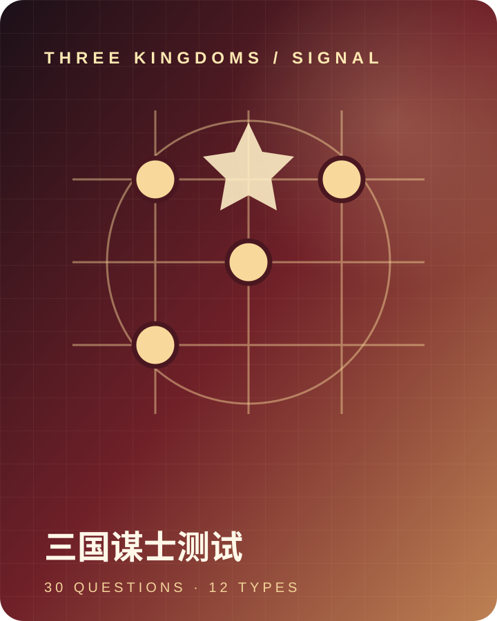

开放测试EVA / 007修真性格 · 主角原型
测试你是哪位
修仙小说主角
先选男主、女主或随机线路，再经历 36 道修真情境，找到你的主角原型和可以带回现实的行动建议。
进入测试
PERSONAL PATTERN ANALYSIS
把你放进具体情境，记录判断、取舍与行动方式。完成作答后，即时获得人格原型、倾向分析和具体建议——结果不替你下结论，只帮你多看清自己一点。
01 / EVALUATIONS
每项测试都从一个具体问题出发。不必揣摩标准答案，选更像你真实反应的那一个。

开放测试EVA / 007修真性格 · 主角原型
先选男主、女主或随机线路，再经历 36 道修真情境，找到你的主角原型和可以带回现实的行动建议。

开放测试 EVA / 001职业方向 · 副业规划
结合你的能力、资源和行动习惯，找到更值得优先验证的轻资产赛道，并拿到具体的起步建议。

开放测试 EVA / 002亲密关系 · 相处方式
从表达方式、亲密距离和关系节奏出发，看见你在恋爱中的自然反应、核心需要与相处提醒。

开放测试 EVA / 005历史性格 · 治理偏好
面对识局、用人、制度与决断等历史情境，看你更像哪位帝王，以及这种治理风格如何影响现实选择。

开放测试 EVA / 003职场状态 · 娱乐人格
从情绪可见度、职场反骨值、行动电量和社交回血度，看见你在压力下最真实的工位生存方式。

开放测试 EVA / 006历史性格 · 女性力量
从谋局、担当、联结、开拓与落地等维度，找到你的历史女主原型，以及可以借鉴的行动方式。

开放测试 EVA / 004历史性格 · 谋略偏好
面对用人、出谋、处世与破局等选择，看你更像哪位三国谋士，并读懂自己的谋略偏好。
02 / HOW IT WORKS
问题来自工作、关系和生活中的真实选择，不考知识，也不要求你迎合某种正确。
系统综合整组答案识别反复出现的偏好，不用单独一道题给你贴标签。
查看人格原型、倾向画像、核心优势、风险提醒，以及下一步可以尝试的具体行动。
测评结果用于个人探索与方向参考，不构成职业、投资、医疗或心理诊断建议。